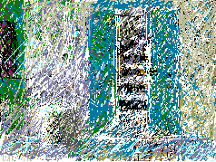
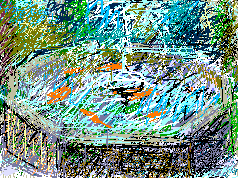
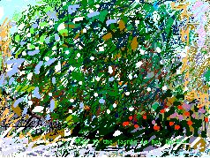

Her name was Maryam Atallah. She was beautiful dignified powerful and impressive. The children of her sons feared her a bit. I, daughter of her daughter, felt all the pleasure of her love. She was my heroine and primary role model.

To the left of the door there was a stone fragment from some ancient column. It was my grandfather's favorite seat. To his left he guarded the door to his home and to his right he tended his grocery store. This past July of 1995 I entered a grocery store across the street from my grandfathers place. The Israeli store keeper wore white gloves to prove how clean he was. Yet he sold me a used and refilled water bottle for the price of a new one. I paid in his money of occupation -- in shekels. This is my occupied neighborhood in occupied Jerusalem in occupied Palestine, for now, full of hostile strangers.
Through the door, up the steps, then onto the porch and garden. I look in memory on my family grouped to just fit the porch while siblings and cousins run freely in the garden. This porch is brim full of our life and love and learning. My recent memory of this porch is that of haggling with Israelis over my right to have my camera on my shoulder as I request to enter this house of my grandparents. Who are these intruders -- these occupiers? Who gave them our home?
This is her wondrous garden just beyond the porch of our heart. Near the fountain, her Norfolk pine so lovingly tended, was my first lesson in numbers and geometry. Now this garden is a weed patch bereft of its bubbly heart.

Each one of us endlessly played in this tiny fountain entranced by its patterns and its goldfish. It is no longer there. I came back to New York and heard of a tile shop called Ann Sacks selling tiles from "Ancient Palestine." I quote their pamphlet: "BIBLICAL STONE RANDOM SIZES AS RECLAIMED FROM CENTURIES OLD BUILDINGS IN THE MIDDLE EAST." Could I bring myself to go look and see if the fountain of our joy is for sale by thieves to strangers?

This is the jasmine bush in Maryam Atallah's garden. She died in exile far away from her home having to watch her close-knit family exploded all over the globe by the creation of Israel in 1948.
I was born in Jerusalem and this spring I returned to witness the homes of my childhood in Palestine under control of the Israeli state. My emotional reaction to those places I loved so much, now under occupation, brought me to start this series of drawings. They record my beautiful memories of Palestine and those who taught me most and whom I loved.
My Grandmother... The Town of Beisan... The Arab City of Jerusalem... Sabah Told Me... My Home in Yafa... Khader Told Me... Olives of Palestine... Our Students... A Taxi Ride in Bethlehem... Written by Doctor Fathihe Saudi... Hasan Told Me... A Visit to Kafr Qasem... The Artist of Kafr Qasem... The Massacre at Kafr Qasem (not yet ready)
Tayseer Barakat, painter... Rana Bishara, painter and installation artist... Sari Khouri, painter... Abdel Tamam, painter... Vera Tamari, ceramist and painter... Adnan Yahya, painter and graphic artists...